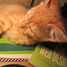
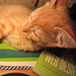

Без солнцезащитных очков - никуда
Звезда по имени Солнце – источник радости, счастья и самой жизни. Яркое светило – наш друг. Но оно же может стать нашим врагом, если мы никак не будем защищать себя от воздействия его лучей. У котиков глаза очень чувствительны, поэтому в путешествиях я всегда ношу солнцезащитные очки.
На фотках представлены очки брендов:


 

1 - Prada — итальянская публичная компания, специализирующаяся на производстве модной одежды, обуви и аксессуаров, которой принадлежат одноимённые дом моды и торговая марка.
2 - Компания Tiffany & Co. продаёт ювелирные изделия, серебро, фарфор, хрусталь, канцелярские принадлежности, парфюмерию, украшения, аксессуары, а также некоторые изделия из кожи. Многие из этих товаров продаются в фирменных бутиках, а также при помощи почтовых переводов и корпоративного мерчандайзинга.
3 - Polaroid — один из старейших брендов в индустрии очков, предлагающий свою продукцию с 1937 года. Модели Polaroid в основном характеризуются поляризованными линзами, благодаря которым они стали всемирно известным брендом. Polaroid всегда отличались высоким качеством и демократичными ценами. Вся продукция компании поставляется с линзами UltraSight, изготовленными из современных эко-полимеров. Линзы Polaroid состоят из 9 важных слоёв, которые блокируют весь вредный ультрафиолетовый свет и включают в себя амортизаторы безопасности и прочности.
4 - Об известной компании Ray Ban знает даже ребёнок. Бренд стал знаменитым благодаря своим культовым моделям – авиаторам и вэйфарерам. Ray Ban стал не только главным атрибутом гардероба модников, но и важным защитником глаз от солнечного излучения. Защита глаз от УФ-лучей является важным преимуществом Ray Ban среди своих конкурентов. Кроме того, линзы аксессуара имеют дополнительную защиту от отражающих поверхностей, таких как лед, снег, вода. Ray Ban также предоставляет возможность приобрести очки с поляризованным покрытием, которые выполнены из высококачественного хрусталя или пластика, а также солнечные очки с диоптриями. Поляризация в Ray Ban блокирует до 100% световых волн, обеспечивая высокую защиту от синего излучения и низкую проходимость светопропускания: только 15% видимого света попадает в глаза.